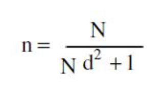

Rumus Sampling Menurut Para Ahli
Rumus sampling adalah metode matematis yang digunakan dalam penelitian untuk menentukan ukuran sampel yang akan diambil dari populasi. Populasi adalah keseluruhan objek atau individu yang menjadi fokus penelitian, sedangkan sampel adalah sebagian dari populasi yang diambil untuk mewakili keseluruhan populasi.
Pentingnya rumus sampling terletak pada akurasi dan representativitas hasil penelitian. Dengan menggunakan rumus yang tepat, peneliti dapat memastikan bahwa sampel yang diambil mencerminkan karakteristik populasi secara keseluruhan. Setiap rumus memiliki pertimbangan dan kegunaan yang berbeda tergantung pada jenis penelitian dan karakteristik populasi yang diteliti.
Berikut rumus untuk menentukan sampling dari beberapa ahli :
Referensi Menurut Beberapa Ahli di Indonesia
- Menurut Sugiyono
- Menurut Ridwan dan Akdon
Menurut Sugiyono (2016:80) sampel adalah bagian dari jumlah dan karakteristik yang dimiliki oleh populasi tersebut. Sampel dilakukan karena peneliti memiliki keterbatasan dalam melakukan penelitian baik dari segi waktu, tenaga, dana dan jumlah populasi yang sangat banyak.
Rumus Solvin
Dalam penelitian ini penulis mempersempit populasi yaitu jumlah seluruh karyawan sebanyak 275 auditor dengan menghitung ukuran sampel yang dilakukan dengan menggunakan teknik Slovin menurut Sugiyono (2015:87). Adapunpenelitian ini menggunakan rumus Slovin karena dalam penarikan sampel, jumlahnya harus representative agar hasil penelitian dapat digeneralisasikan dan perhitungannya pun tidak memerlukan tabel jumlah sampel, namun dapat dilakukandengan rumus dan perhitungan sederhana. Rumus Slovin untuk menentukan sampel adalah sebagai berikut:
Keterangan:
n = Ukuran sampel/jumlah responden
N = Ukuran populasi
E = Presentase kelonggaran ketelitian kesalahan pengambilan sampel yang masih bisa ditolerir;
e = 0,1
Dalam rumus Slovin ada ketentuan sebagai berikut:
Nilai e = 0,1 (10%) untuk populasi dalam jumlah besar
Nilai e = 0,2 (20%) untuk populasi dalam jumlah kecil
Rumus Lemeshow
Merujuk pendapat Riduwan dan Akdon (2010), Lemeshow adalah rumus yang digunakan untuk menentukan jumlah sampel minimal yang diperlukan dalam penelitian kuantitatif, jika populasi tidak diketahui atau tidak terbatas.
Diketahui lemeshow adalah nama dari seorang ahli statik yang mengembangkan rumus untuk menghitung jumlah sampel minimal dalam penelitian, jika populasi tidak diketahui atau tidak terbatas.
Rumus Lemeshow dapat membantu peneliti dalam menentukan ukuran sampel yang sesuai dengan tujuan, desain, dan metode penelitian mereka. Rumus Lemeshow juga dapat digunakan untuk membandingkan berbagai jenis penelitian, seperti deskriptif, komparatif, korelasional, atau eksperimental. Rumus Lemeshow adalah:
Keterangan :
n = Jumlah sampel yang akan diambil.
α = Kesalahan generalisasi. Nilainya ditetapkan peneliti.
Zα = Nilai standar dari alpha. Diperoleh dari tabel Z
P = Proporsi dari kategori menjadi point of interest, diperoleh
dari studi terdahulu (Jika Tidak diketahui maka 50% atau
0,5)
Q = 1- P
d = Presisi penelitian, yaitu kesalahan prediksi proporsi yang
masih dapat diterima. Nilai ditentukan oleh peneliti.
Rumus Taro Yamane
Penggunaan rumus sampling Taro Yamane dipilih untuk menghitung jumlah sampel. Dikutip dari Riduwan (2013) melalui Rochmah (2016) menjabarkan rumus Taro Yamane sebagai berikut:

Keterangan:
n = Jumlah sampel
N = Jumlah populasi yang diketahui
d = Presisi yang ditetapkan.
Dalam penelitian ini, penulis menggunakan toleransi kesalahan sebesar 10%.
Referensi Menurut Beberapa Ahli Luar
- Rumus Stephen Isaac & Willian B. Michael
- Rumus Krejcie dan Morgan
- Metode Krejcie dan Morgan dapat dipakai untuk menentukan ukuran sampel, hanya jika penelitian bertujuan untuk yang menduga proporsi populasi.
- Asumsi tingkat keandalan 95% (sembilan puluh lima persen), karen menggunakan nilai X2 = 3,841 yang artinya memakai a=0,05 pada derajat bebas 1.
- Asumsi keragaman populasi yang dimasukkan dalam perhitungan adalah P(1-P), dimana P=0,5.
- Asumsi nilai galat pendugaan 5% (lima persen) (d=0,05).
Rumus ini digunakan untuk mendapatkan banyaknya sampel dalam survei yang bertujuan untuk mengestimasi proporsi dan kita tidak mengetahui perkiraan dariproporsi populasi tersebut yang merupakan dasar penghitungan varian. Untuk menentukan jumlah sampel dari populasi pada penelitian ini yaitumenggunakan rumus Isaac dan Michael. Rumus Isaac dan Michael ini telah diberikan hasil perhitungan yang berguna untuk menentukan jumlah sampel berdasarkan tingkat kesalahan 1%, 5%, dan 10%.
Dengan :
S = Jumlah Sampel
N = Jumlah populasi
P = Proporsi dalam populasi (P = 0,50)
d = Ketelitian / derajad ketetapan (0,05)
X^2 = Nilai table chisquare untuk µ tertentu (X2 =3,841 taraf signikansi 95 %)
Teknik dalam pengambilan sampel dalam penelitian ini adalah Probability Sampling dengan metode pengambilan sampel simple random sampling. Dikatakan simpel karena teknik pengambilan sampel yang dilakukan secara acak tanpa mempertimbangkan strata yang ada dalam populasi tersebut. Penentuan besaran sampel menggunakan tabel, jumlah sampel berdasarkan jumlah populasi oleh Krejcie dan Morgan. Sehingga ditentukan jumlah sample yang dapat digunakan dalam penelitian ini dapat dilihat pada tabel berikut:
Rumus Krejcie dan Morgan :
dimana:
n = ukuran sampel
N = ukuran populasi
X^2 = nilai Chi kuadrat
P = proporsi populasi
d = galat pendugaan
Berdasarkan pada perhitungan di atas, dapat diketahui beberapa keterangan mengenai Metode Krejcie dan Morgan sebagai berikut:
Tabel Krejcie dan Morgan
Tabel tersebut adalah tabel jumlah populasi dan berapa sampel yang diambil. Angka - angka dalam tabel tersebut sudah dipublikasikan dan diakui menurut tingkat keakuratan (Sudah diPublikasikan). Cara membaca tabel tersebut adalah dengan cara mengambil jumlah Populasi (N) misal 100 maka dikolom sebelahnya sudah ditentukan besar sampelnya (n) yaitu 80. Misal N = 1000 maka n=278 dan seterusnya. Nah, sekarang bagaimana jika jumlah populasi tidak ada pada tabel.
References:
http://repository.stei.ac.id/5850/4/Bab%20III.pdf
https://www.brilio.net/ragam/rumus-lemeshow-lengkap-dengan-pengertian-dan-cara-menghitungnya-231030e.html
http://repository.stei.ac.id/4510/4/BAB%20III_REPOSITORY-converted.pdf
https://id.scribd.com/document/634253052/Untitled
https://etheses.iainkediri.ac.id/1992/4/931317514%20BAB%20III.pdf
https://www.sindopos.com/2022/08/cara-menghitung-sampel-dengan-rumus.html

Dinda Putri Ramadani
Hai!!! Perkenalkan saya Dinda Putri Ramadani salah satu mahasiswi dari Universitas Dinamika Bangsa Jambi. Blog ini untuk memenuhi tugas yang diberikan oleh dosen pembimbing saya. Terima Kasih!!! xixixi